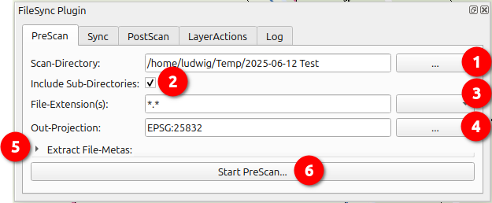
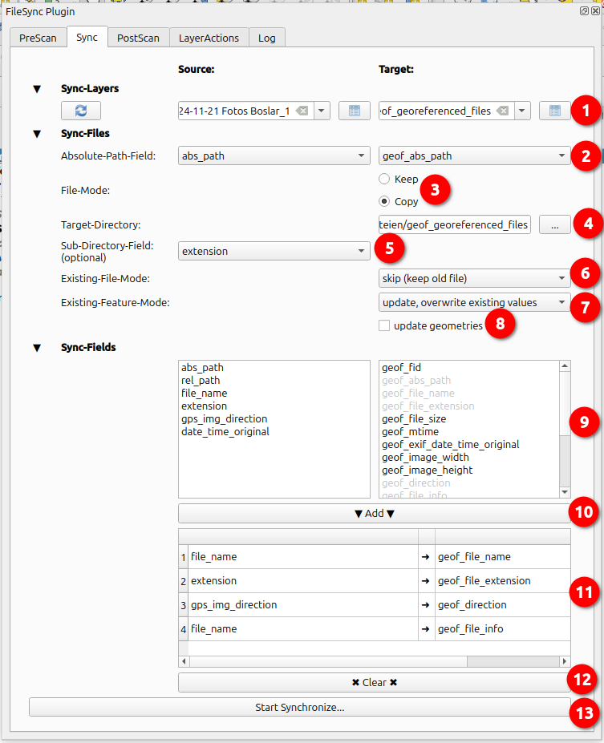
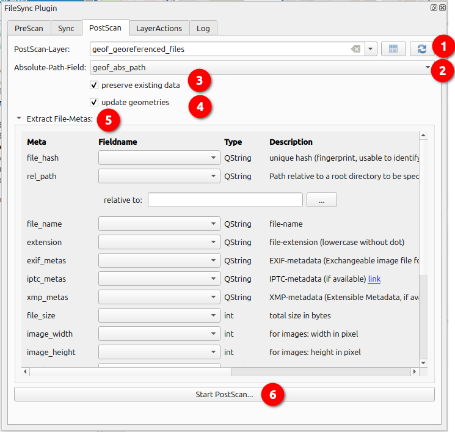
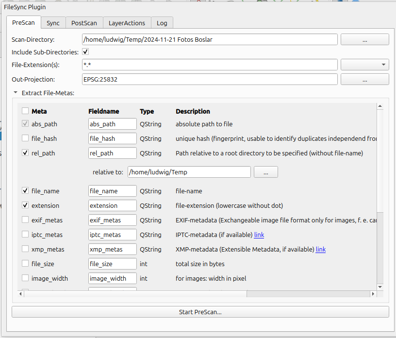

QGis-Plugin zur Extraktion und Speicherung von Datei-Metadaten als Attribut/Georeferenzierung in einem Punkt-Layer.
Ursprüngliche Anwendung: Digitalfotos mit GPS-lat/lon-Koordinaten im Exif-Header.
Szenario:
Ein Tag unterwegs, viele Fotos mit dem Handy
aufgenommen, leider zu spät bemerkt, dass die Fotos ohne
GPS-Koordinaten gemacht wurden :-(
Ergebnis: Ein Haufen Fotos
ohne Angaben, wo und wann genau diese aufgenommen wurden.
Schön wäre jetzt ein Punkt-Layer mit Fotostandorten,
Aufnahmerichtung, Zeitpunkt der Aufnahme...
Genau zu diesem Zweck bietet das Plugin Hilfestellungen, um
|  |
|
 den Zoom/Pan auf
diesen Datensatz
den Zoom/Pan auf
diesen DatensatzDiese dient der Synchronisation der temporären PreScan-Ergebnisse mit einem bereits vorhandenem regulären Punktlayer. So kann ein georeferenzierter Bestand von Dateien mit neuen PreScan-Ergebnissen ergänzt werden.
Hinweis:das Plugin verwendet absolute Pfadangaben, je nach Laufzeitumgebung können sich Unterschiede ergeben (Linux vs. Windows, geänderte Laufwerksbuchstaben, Änderungen der Ordnerstruktur). Das plugin schreibt Pfadangaben daher grundsätzlich in Posix-Schreibweise, also '/' (Slash) statt '\' (Backslash). Bei Bedarf sind die Pfadangaben an die Laufzeitumgebung anzupassen.
|  |
|
In diesem Modus können Metadaten bereits referenzierter Dateien eines Layers ergänzt oder aktualisiert werden.
|  |
|
 Feature auf Karte
anzeigen / Geometrie bearbeiten
Feature auf Karte
anzeigen / Geometrie bearbeiten
Falls ein Feld mit der Aufnahmerichtung konfiguriert wurde, wird diese auf der Karte mit einer temporär blinkenden Pfeil-Grafik symbolisiert.
Geometrie-Bearbeitung:
Hinweis: Im Gegensatz zu QGis-Bordmitteln kann eine Digitalisierung mit diesem Tool auch erfolgen, falls noch keine Geometrie vorhanden ist, z. B. nach PreScans von Dateien ohne GPS-Informationen.
 |
|
| PreScan | PostScan |
|---|---|
| (Eingabefelder für die Feldnamen im anschließend erstellten PreScan-Ergebnis-Layer) | (DrowDowns zur Auswahl der Zielspalte eines bereits vorhandenen Layers) |
|  |  |
| Name | Inhalt | Bemerkungen |
|---|---|---|
| abs_path | absoluter Pfad | obligatorische Grundlage ➞ automatisch selektiert |
| file_hash | sha1-Hash | aus Datei-Inhalt berechneter eindeutiger "Fingerabdruck", ermöglicht die Duplikatsuche unabhängig von Dateinamen/Metadaten Wikipedia: Secure_Hash_Algorithm |
| rel_path | relativer Pfad | Pfad relativ zum anzugebenden Wurzel-Verzeichnis |
| file_name | Dateiname | Nach Sync-Durchlauf mit file-mode "copy" umter Umständen anders als der ursprüngliche Dateiname |
| extension | Dateierweiterung | lowercase, ohne Punkt |
| exif_metas | Exif-Metadaten | Dateiheader in Jpeg-Grafiken mit u. A. Angaben zu Kamera,
Aufnahmezeitpunkt, GPS-Koordinaten Wikipedia:
Exif Gespeichert wird eine stringifizierte Version der Metadaten. |
| iptc_metas | IPTC-Metadaten | Dateiheader mit weiteren Metadaten Wikipedia: IPTC_Information_Interchange_Model Gespeichert wird eine stringifizierte Version der Metadaten. |
| xmp_metas | XMP-Metadaten | Dateiheader mit weiteren Metadaten Wikipedia: Extensible_Metadata_Platform Gespeichert wird eine stringifizierte Version der Metadaten. |
| file_size | Dateigröße in Byte | |
| image_width | Bild-Breite in Pixel | nur bei Grafikdateien |
| image_height | Bild-Höhe in Pixel | nur bei Grafikdateien |
| gps_latitude | Geokoordinate Aufnahmepunkt | aus Exif-Header extrahierter Breitengrad, WGS84 |
| gps_longitude | Geokoordinate Aufnahmepunkt | aus Exif-Header extrahierter Längengrad, WGS84 |
| gps_altitude | Geodätische Höhe des Aufnahmepunktes | aus Exif-Header extrahierter Höhenwert |
| gps_img_direction | Blickrichtung der Aufnahme | aus Jpeg-Exif-GPS-Header extrahiert, Winkel gegen Nord im Uhrzeigersinn |
| m_time | Modification Time: Datum/Uhrzeit der letzten Änderung | Wikipedia: MAC_times |
| c_time | Creation Time: Datum/Uhrzeit Dateierstellung | je nach Systemumgebung auch 'Change time' ➞ Datum/Uhrzeit
der letzten Metadaten-Änderung (Eigentümer, Berechtigung) Wikipedia: MAC_times |
| a_time | Access Time: Datum/Uhrzeit des letzten Lesezugriffs | Wikipedia: MAC_times |
| date_time_original | Datum/Uhrzeit der Aufnahme | aus Exif-Header extrahiert, Wert entsprechend System-Einstellung des Aufnahmegeräts (Mobiltelefon...) |
 |
|

| Author: | Ludwig Kniprath |
| Mailto: | ludwig[at]kni-online.de |
| Version: | 1.0.0 (2025-06) |
| Das Plugin wurde unter der derzeit aktuellen QGis Version "3.44.0-Solothurn" entwickelt, sollte aber auf älteren Versionen (LTR) lauffähig sein. | |
| Quell-Code und Tracker unter https://github.com/Ludwig-K/QGisFileSync/ | |
| Das Project steht unter der GNU GPL 2-Lizenz. | |